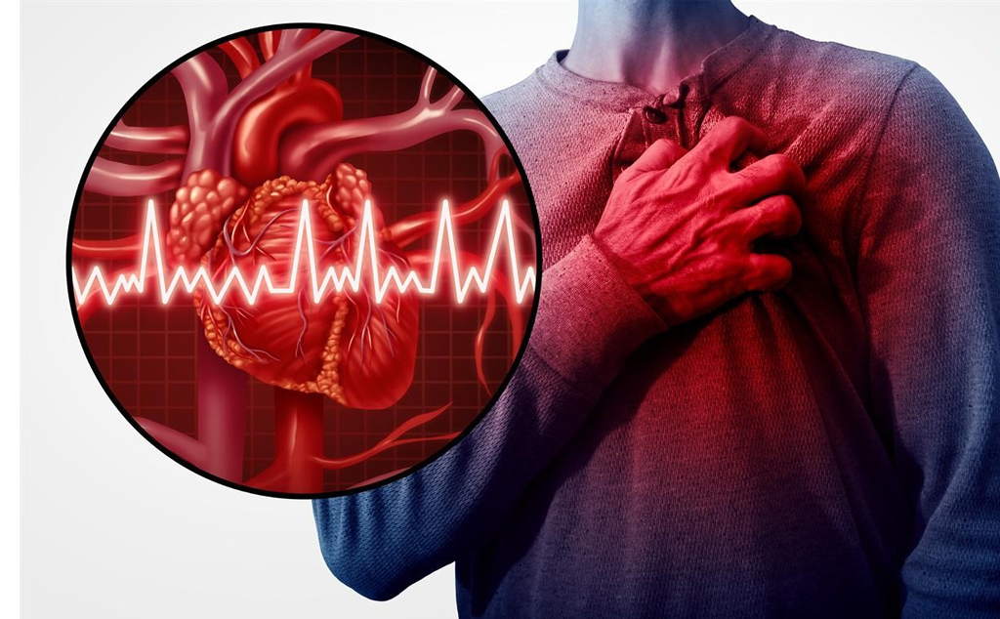
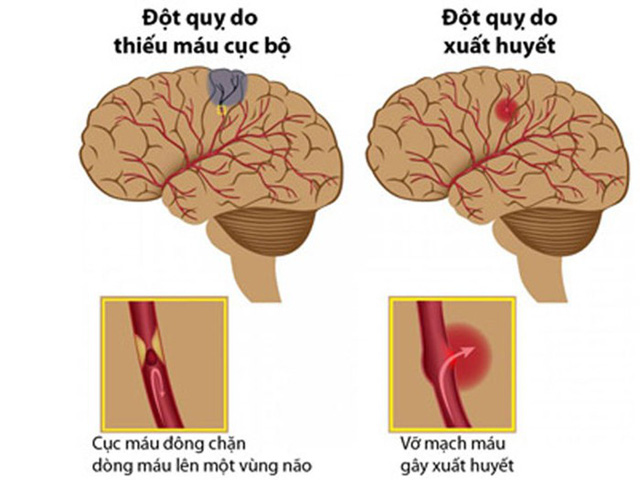
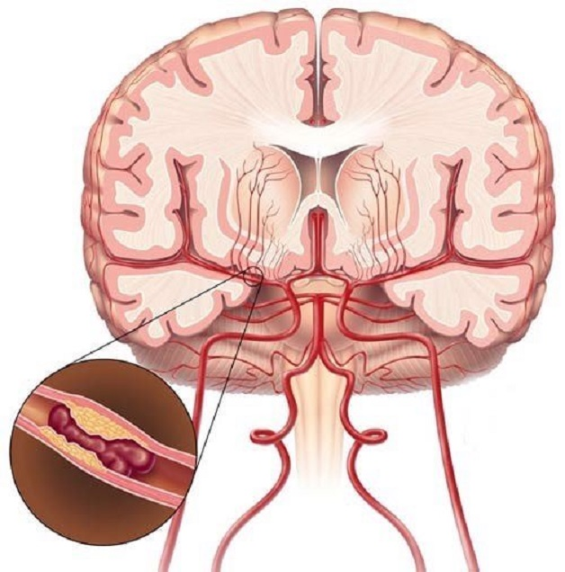

Nội dung

TÀI LIỆU VỀ BỆNH ĐỘT QUỴ
1. Đột quỵ là gì?
Đột quỵ (stroke) còn gọi là tai biến mạch máu não thường xảy ra đột ngột khi nguồn máu cung cấp cho não bị tắc nghẽn, gián đoạn hoặc suy giảm. Khi đó, não bị thiếu oxy, dinh dưỡng và các tế bào não bắt đầu chết trong vòng vài phút. Người bị đột quỵ có nguy cơ tử vong cao nếu không được phát hiện và cấp cứu kịp thời. Đây là một trong những bệnh lý thần kinh nguy hiểm và phổ biến nhất.
2. Các loại đột quỵ
2.1 Đột quỵ do thiếu máu cục bộ
Thiếu máu cục bộ dẫn đến đột quỵ xảy ra do tình trạng tắc nghẽn trong động mạch. Theo thống kê, hiện nay có đến khoảng 85% các ca bệnh đột quỵ thuộc nhóm này. Tuy nhiên, có nhiều trường hợp vẫn chưa tìm ra nguyên nhân chính xác dẫn đến tình trạng này.
2.1.1 Đột quỵ do huyết khối
Một trong những nguyên nhân đột quỵ phổ biến tiếp theo là do huyết khối các mảng xơ vữa bên trong thành mạch có thể tiến triển gây hẹp dần lòng mạch. Các tổn thương này có thể dẫn đến sự kết tập bất thường của tiểu cầu tại vị trí hẹp, làm lòng mạch bị tắc nghẽn hoàn toàn. Hậu quả là một phần não bị thiếu máu nuôi, dẫn đến đột quỵ do thiếu máu tại chỗ.
2.1.2 Đột quỵ do thuyên tắc
Động mạch bị tắc nghẽn do huyết khối từ nơi khác đến gây lấp mạch. Huyết khối này có thể được hình thành từ tim hoặc do mảng xơ vữa động mạch bong tróc ra. Dạng đột quỵ này được gọi là đột quỵ do thuyên tắc.
2.2 Đột quỵ do xuất huyết não
Tình trạng xuất huyết (chảy máu) não, là do vỡ mạch máu não làm chảy máu vào nhu mô não, khoang dưới nhện hay não thất. Có khoảng 15% các trường hợp bệnh đột quỵ hiện nay là do xuất huyết não.
3. Dấu hiệu đột quỵ
Khuôn mặt: Dấu hiệu dễ nhìn thấy là mặt bệnh nhân bị méo. Nếu nghi ngờ hãy yêu cầu bệnh nhân cười vì méo có thể rõ hơn.
Tay: Tay bị liệt, cũng có thể có diễn tiến từ từ như tê một bên tay, vẫn điều khiển được tay nhưng kém chính xác. Ngoài tay còn có một số dấu hiệu ở chân như nhấc chân không lên, đi rớt dép,….
Lời nói: Rõ nhất là một số người đột quỵ bị “á khẩu” hay nói đớ.
Thời gian: Đưa bệnh nhân bệnh viện khám ngay khi ghi nhận những dấu hiệu vừa kể.
Ngoài ra có những triệu chứng ở người bị đột quỵ có thể kể đến như:
- Lẫn lộn, sảng, hôn mê.
- Thị lực giảm sút, hoa mắt.
- Chóng mặt, người mất thăng bằng, không thể đứng vững.
- Đau đầu là triệu chứng phổ biến của đột quỵ.
- Buồn nôn, nôn ói,….
4. Nguyên nhân đột quỵ
Hai nguyên nhân chủ yếu gây nên hiện tượng đột quỵ là do thiếu máu cục bộ (tắc nghẽn động mạch) hoặc do xuất huyết não (mạch máu bị vỡ).

Các yếu tố nguy cơ bao gồm:
- Người bị các bệnh lý tim mạch như hở van tim, rung tâm nhĩ, nhịp tim không đều, suy tim,…;
- Người bị tăng huyết áp;
- Người bị tiểu đường;
- Người bị rối loạn Lipid máu;
- Tiền sử cá nhân hoặc gia đình đã từng bị đột quỵ, thiếu máu não thoáng qua hoặc bệnh tim;
- Lạm dụng các chất kích thích như uống nhiều rượu, sử dụng ma túy;
- Người hút thuốc lá chủ động hoặc hít phải khói thuốc lá thụ động, gặp tình trạng khói thuốc lá dẫn đến mỡ tích tụ trong động mạch, tăng nguy cơ máu đông;
- Người thừa cân, béo phì, ít vận động tập thể dục;
- Chế độ ăn uống không hợp lý, lượng Cholesterol cao;
- Về tuổi tác, người trong nhóm tuổi từ 55 tuổi trở lên có nguy cơ cao hơn;
- Phụ nữ có nguy cơ bị đột quỵ thấp hơn so với nam giới;
- Việc sử dụng thuốc tránh thai hay các liệu pháp điều chỉnh hormone, thay đổi nội tiết tố cũng làm tăng nguy cơ gây bệnh.
5. Ai dễ có nguy cơ đột quỵ
Các nhóm đối tượng dễ có nguy cơ bị đột quỵ cao hơn người bình thường bao gồm:
- Ít vận động, ít tập thể dục thể thao rèn luyện sức khỏe.
- Thường xuyên hút thuốc lá hoặc tiếp xúc với khói thuốc lá.
- Ít ăn rau xanh nhưng thường xuyên dùng đồ ăn có hàm lượng chất béo, dầu mỡ cao.
- Nam giới và cả phụ nữ khi bước qua tuổi trung niên.
- Gia đình từng có người bị đột quỵ.
- Đang mắc hoặc đang điều trị các bệnh lý tim mạch, tăng huyết áp.
- Người bị tiểu đường.
- Người thừa cân, béo phì.
6. Phương pháp chẩn đoán đột quỵ
Đột quỵ thường diễn ra một cách đột ngột, nhanh chóng nhưng để lại hậu quả nặng nề. Do đó, người bệnh cần được đưa đến bệnh viện để được can thiệp càng sớm càng tốt, kể từ khi có những dấu hiệu bệnh đầu tiên.
Bệnh sử
- Khởi phát đột ngột;
- Yếu liệt nửa người;
- Méo miệng, nói đớ,…
Lâm sàng
- Liệt VII trung ương, nói khó;
- Hội chứng liệt nửa người;
- Tê hay dị cảm tay và chân cùng bên;
- Rối loạn ngôn ngữ;
- Rối loạn thị giác;
- Đau đầu, chóng mặt;
- Rối loạn tri giác: Ngủ gà, lơ mơ, hôn mê.



.png)
.png) Email: donghochongdotquy@gmail.com
Email: donghochongdotquy@gmail.com
.png) Website: www.donghochongdotquy.com
Website: www.donghochongdotquy.com